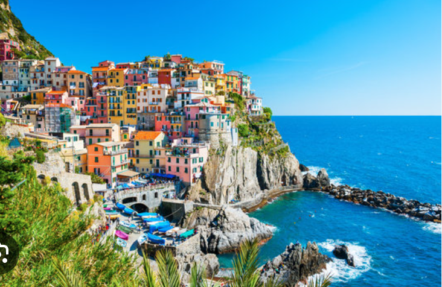
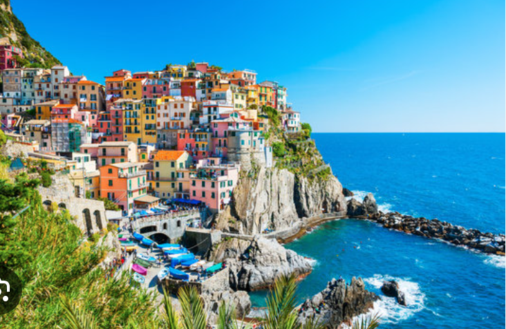

Travel
Yellow stone park

My family and I went to the Yellowstone park last summer for my high school graduation trip. We went hiking and camping.
This was an awesome experience for my family and me. It was the first time that we traveled together in the States.
Tokyo

This picture was taken from the Tokyo tower. My friends and I were discussing the travel plan and took this picture.
It was a great place to glance Tokyo. We could also see the Fuji mountains.
Hawaii

Welcome to Hawaii, the Aloha state. Hawaii is comprised of a chain of 132 islands. We usually think of the eight main islands when we think of Hawaii. This is not surprising as the other 124 islands only total about 3 square miles in land area.
Hawaii is home to the world's most active volcano, the crater of Kilauea on Mauna Loa. Sandy beaches, towering volcanoes, and lush valleys lure thousands of tourists each year to this tropical paradise.
Italy
 

Rome is one of the oldest metropolitan areas in the world. With a history dating back to 700 BC with the birth of the Roman Empire, the city has maintained its status as a cultural and historical hub of Europe. The city is peppered with ancient monuments, statues, and piazzas from different eras of history. The most famous location, the Colosseum, is touted as one of the seven modern wonders of the world. Rome houses several world-famous museums, such as the Borghese and the Vatican Museum.
It is also the only city in the world to encompass a recognized country, Vatican City.